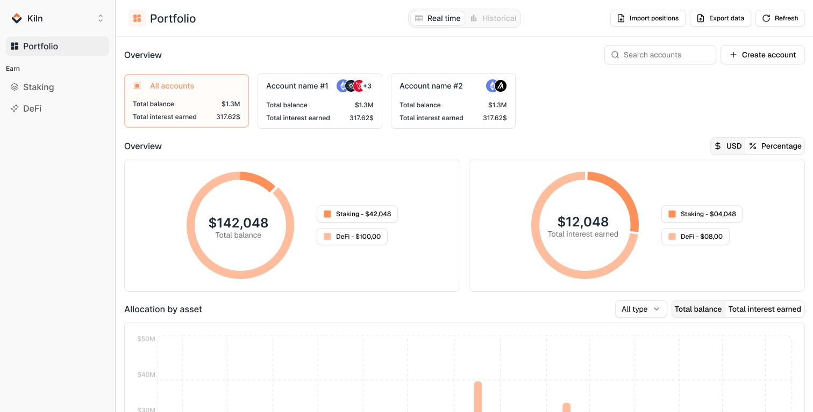
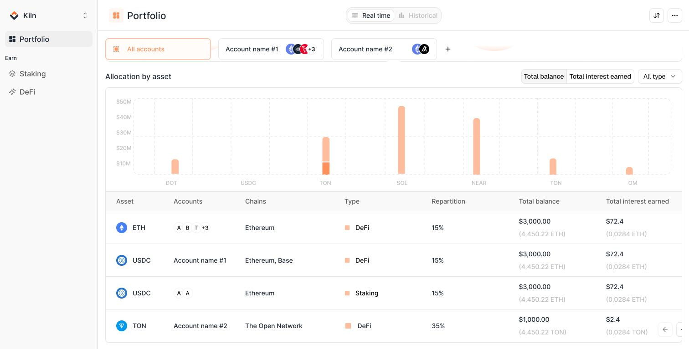
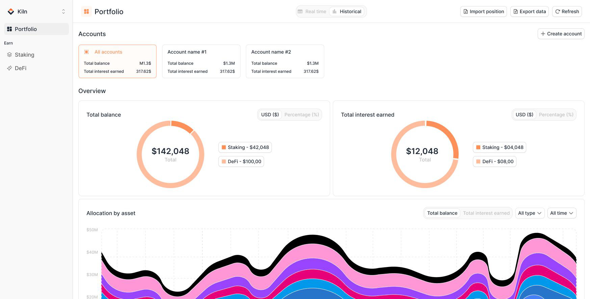
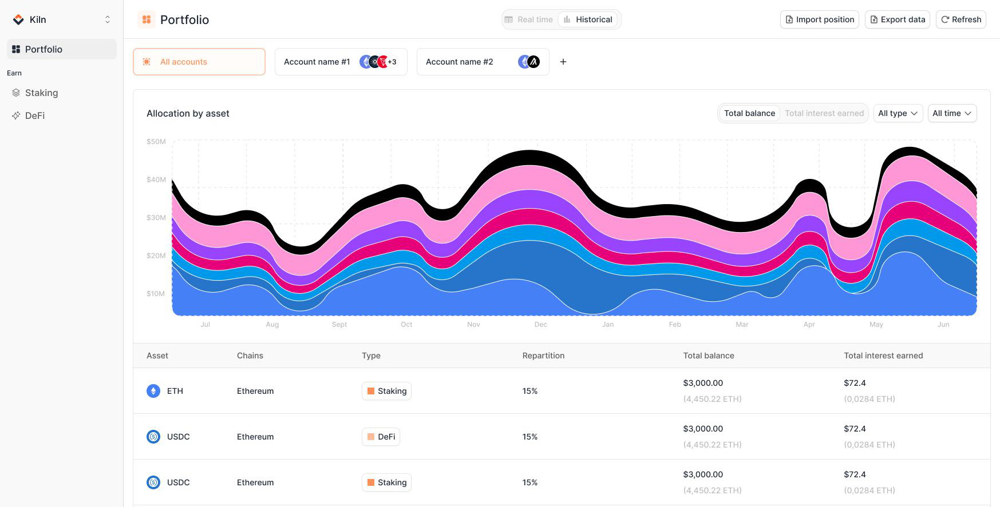
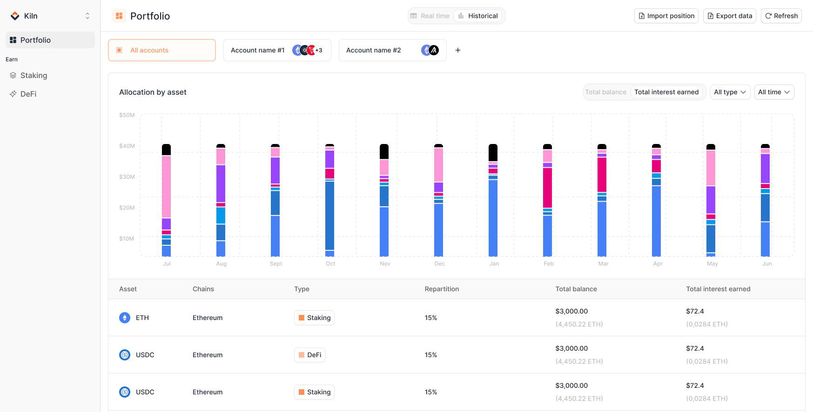
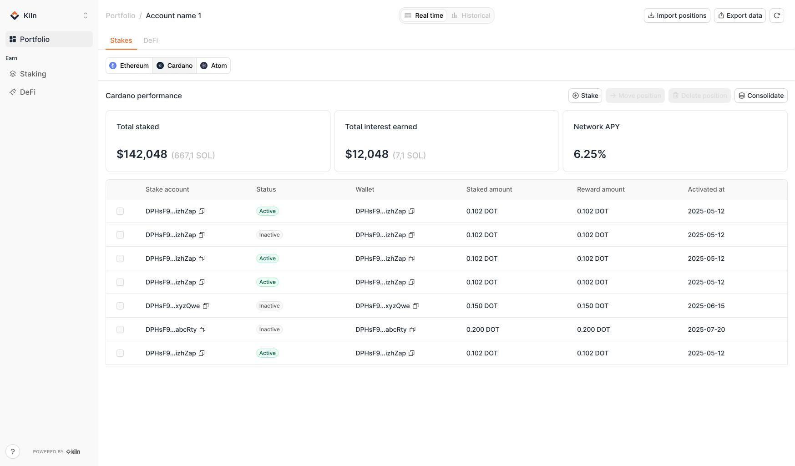
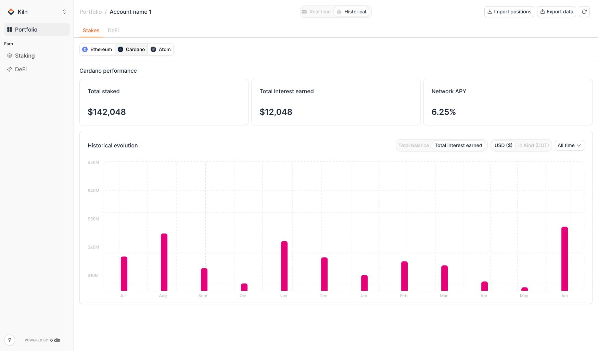

From a staking tool to a
yield portfolio platform
In short: institutions had no single view of their yield, so teams rebuilt it by hand in spreadsheets. I took Kiln's staking-only dashboard to a unified portfolio platform, staking and DeFi in one place, now the daily source of truth for 100+ institutional teams.
Context
Kiln is institutional yield infrastructure with $18B+ in assets staked across 200+ institutions, from exchanges to fintechs to funds. Its rails let those institutions earn onchain yield without ever giving up custody of their assets.
That earning happens two ways, both specific to crypto:
- Staking → locking up assets to help run a blockchain, which pays rewards in return.
- DeFi → lending assets out through automated lending markets that pay interest.
Kiln is the infrastructure that makes both work safely, at institutional scale: $18B+ in assets, 200+ clients.
Here's the catch for a designer: almost none of that infrastructure has a screen. Most clients plug into it through code: an API, an embeddable "earn" widget for their own users, white-label contracts.
Only one surface is built for actual people: the Dashboard, where a client's treasury, finance and ops teams log in to see, operate and report on their positions.
I came in as Kiln was moving from staking into DeFi, right when a staking-only screen stopped being enough.
Plugged by the customer → no interface
Only one surface is built for people → Interface
The problem
Every institution we spoke to was quietly answering the same question:
"Where do all our yield positions actually stand right now?"
No product answered it. So teams rebuilt the answer by hand: exporting from protocol interfaces, reading half-complete custodian dashboards, and stitching it together in a spreadsheet a finance analyst refreshed manually, often from a CSV another team had dropped in Slack.
The question was hard for structural reasons: yield lived across many protocols, each with its own interface; staking and DeFi are mechanically different primitives, so nothing lined them up in one view; and reporting deep enough for compliance and accounting simply didn't exist in-product.
A missing feature is annoying. A missing source of truth is expensive: it costs headcount, and it makes people distrust their own numbers.
Objective
Take the Dashboard from a staking-only admin tool to a unified yield portfolio platform: one place for institutions to discover, deploy, monitor and report on every position, staking and DeFi, across 20+ assets, held through the custodians they already use.
This case study is about the part everything else rests on: turning a fragmented, incompatible set of positions into one view a team can trust as their daily source of truth.
My role
- I was the founding and sole product designer on the Dashboard.
- I led product direction, UX, UI, and the design system end to end.
- I built Kiln's first design system in Figma on top of shadcn/Radix, implemented in code by engineering.
- I prototyped and shipped some features directly in code, including their empty and error states.
- I partnered weekly with product, frontend and data engineering, and kept clients close throughout.
Research
Before designing anything, I needed to understand how institutions actually operate yield day to day, and why every team ends up rebuilding the same spreadsheet. I worked four angles:
User interviews
Sessions with client-side treasury, ops and finance teams. I also worked with our own account managers and customer success, who absorbed the pain daily, to map workflows and frustrations.
Workflow audit
How teams tracked positions today: protocol UIs, custodian dashboards, hand-built spreadsheets, CSVs passed over Slack by our own finance team.
Prospect signals
Institutions sitting on idle stablecoins and Bitcoin, looking for a compliant way to put them to work, and teams already in DeFi hitting a wall at every step.
Custodian & competitive landscape
What custodians actually expose, often partial or delayed, and where the reachable yield set silently shrinks.
Five structural pain points showed up across funds, exchanges, fintechs and treasuries:
- 01
Fragmented access
A different interface and workflow per protocol. A UX problem and a security problem at once.
- 02
Limited custodial integrations
Custodians expose incomplete or delayed access, shrinking the options actually reachable.
- 03
Insufficient reporting
No provider gave finance and compliance the depth they needed, so teams built their own reconciliation: slow, costly, error-prone.
- 04
Blind to risk
No tooling for cross-protocol risk; evaluating a vault took a DeFi specialist most teams didn't have.
- 05
No way to scale
Balancing across protocols was manual, so growing exposure meant growing headcount.
Design decision & screens
Staking and DeFi don't behave alike: different lifecycles, lock-ups, reward mechanics. The obvious move was to build two products, a staking view and a DeFi view, side by side. It was tempting: each could mirror the mental model of its own protocol, and it was less work to reconcile under the hood.
I killed that option early. Two products would have meant learning the tool twice, two reporting grammars to reconcile at audit time, and no way to answer the one question that mattered: what's our total yield, across everything? The fragmentation we were trying to remove would have been rebuilt inside our own product.
So I made the opposite bet: one portfolio view, and three numbers that mean the same thing everywhere. Same tables, same reporting grammar, whatever a team holds. You learn the product once. Under the hood the primitives stay different; on screen, they finally line up.


Portfolio overview → Total balance and total interest, split staking vs DeFi, then every position in a single table: asset, chains, type, share, balance, interest.
Real-time to operate, historical to answer for



Total balance & total interest earned, historical view → Allocation and interest over any window, as a defensible record, not a screenshot reconstructed after the fact.
Down to the position


Down to the position → Per-account performance and full history, so a team can drill from the portfolio all the way to a single stake and still answer for it.
What it became
After launch, the Dashboard became the daily source of truth it was built to be, replacing the spreadsheet-and-CSV-over-Slack workflow. The reconciliation that used to take a finance analyst most of a day now happens in-product in minutes.
Adoption from the platform's first rollout. The time saving is directional, measured against the manual workflow it replaced, the way finance teams already reason about it in practice.
- One screen, staking only
- Positions rebuilt by hand in spreadsheets
- Reporting passed around as CSVs on Slack
- Checked here, then double-checked elsewhere
- Staking and DeFi in one portfolio view
- Positions imported and recognised in minutes
- Self-serve, audit-ready history and exports
- The daily source of truth teams run on